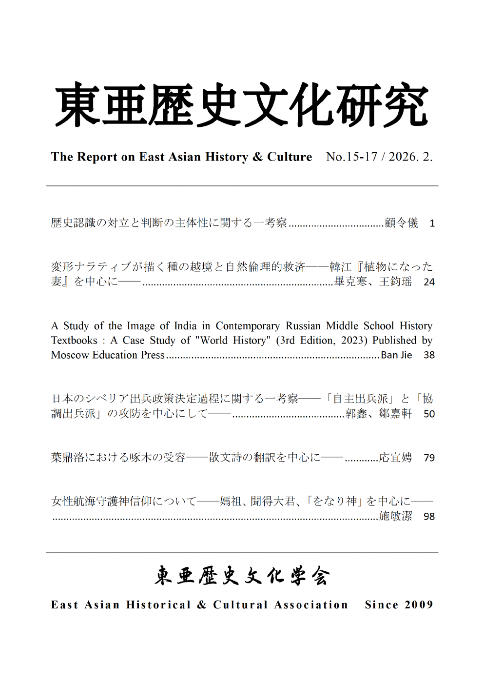

学会誌『東亜歴史文化研究』

No.15-17 目次
- 歴史認識の対立と判断の主体性に関する一考察……顧令儀
- 変形ナラティブが描く種の越境と自然倫理的救済——韓江「植物になった妻」を中心に——……畢克寒、王鈞瑶
- A Study of the Image of India in Contemporary Russian Middle School History Textbooks: A Case Study of “World History” (3rd Edition, 2023) Published by Moscow Education Press……Ban Jie
- 日本のシベリア出兵政策決定過程に関する一考察——「自主出兵派」と「協調出兵派」の攻防を中心にして——……郭鑫、鄒嘉軒
- 葉鼎洛における啄木の受容——散文詩の翻訳を中心に——……応宜娉
- 女性航海守護神信仰について——媽祖、聞得大君、「をなり神」を中心に——……施敏潔
再刊に際して
暫く休刊を余儀なくされていた本誌が、編集体制及び編集員の陣容を新しく整え、再刊することになった。本当に喜ばしいことである。
東亜歴史文化学会は、2009年9月、山口大学を拠点にし、中国、台湾、韓国、日本の研究者を中心に発足した。この間、本誌の発行を重ね、日本、中国、台湾、韓国などでも学会を開催してきた。
本会は今後、機関誌の発行を重ね、研究報告会を適時開催していく予定である。専門領域は文学、歴史学、政治学、社会学など多様だが、学問領域を超えて繋がり合うことこそ、研究者としての喜びである。
東亜歴史文化学会会長 纐纈 厚
全文（Word）をダウンロード編集後記
数年にわたる休刊を経て、このたび『東亜歴史文化研究』を再び刊行することができました。学会活動が中断していた間にも、本誌の再開を待ち続けてくださった皆様に、まず心より御礼申し上げます。
本誌では特定の学問領域に閉じるのではなく、分野を横断した対話を大切にしてきました。完成された結論よりも、開かれた議論を重ねていくことこそが、学問にとって重要なのではないでしょうか。
顧 令儀
全文（Word）をダウンロード